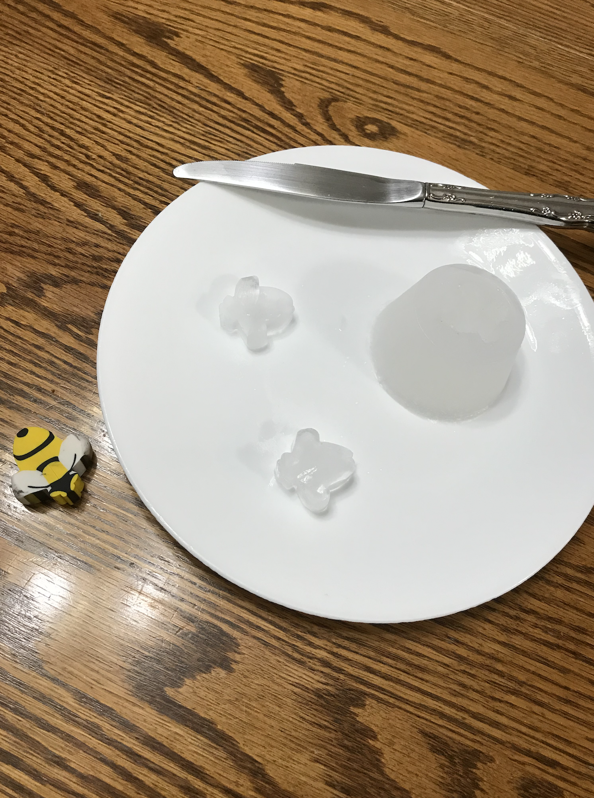

Week 12: Casting, Composites, Sewing
This week, we worked with molding and casting using the materials sent to us in our second package.
I followed the
PS70 guide to molding and casting
as well as the
FormLabs guide
,
I was able to create a single-piece mold of a honeybee eraser.
Here is the result after I casted ice:

In the process, when I made the mold, the eraser ended up sinking to the bottom. However, rather than
including sticks to support it near the surface, i instead allowed it to mold in reverse, cutting off a bit of the bottom after it had hardened.
I also realized that by reducing the total water volume added to the mold, I could help avoid cracks in the ice cast formed and also made it easier to remove the ice after it froze.
If any cracking did happen, allowing it to partially melt and then putting the pieces together to freeze together worked great.
This was a simple but fun week, and my remaining time was spent on debugging my fiinal project!